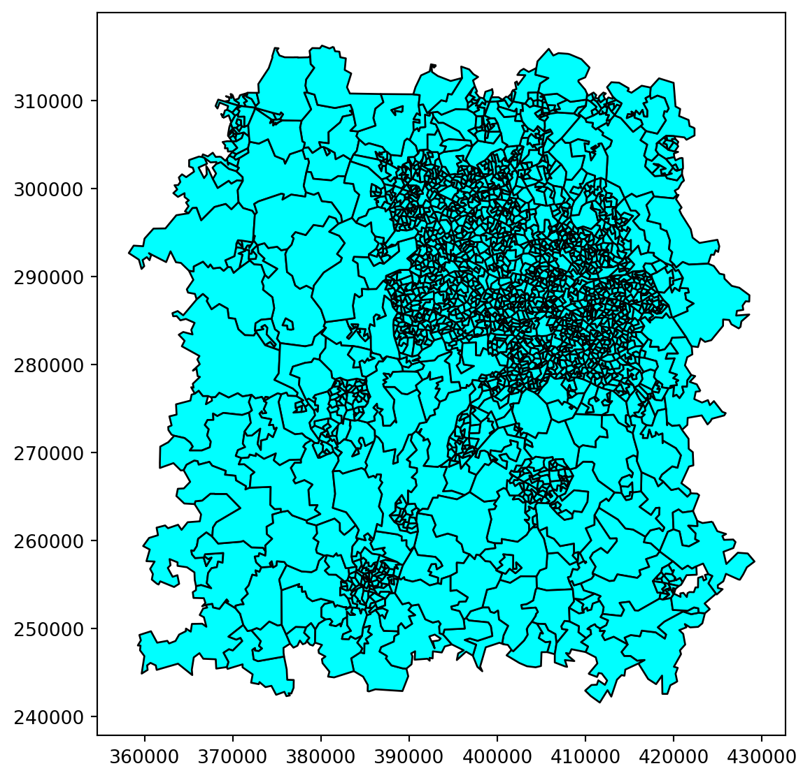
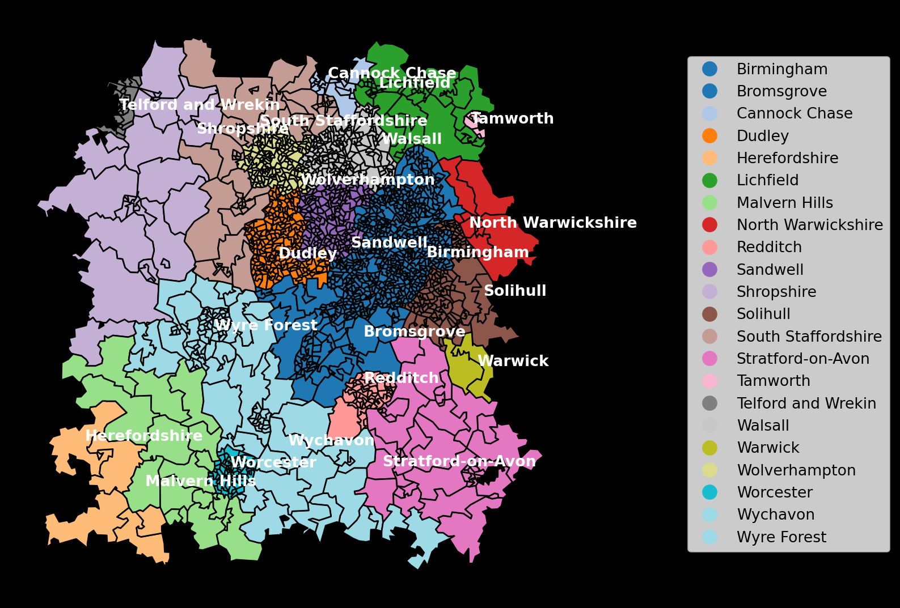
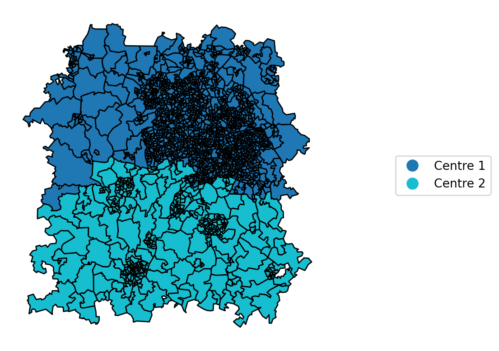
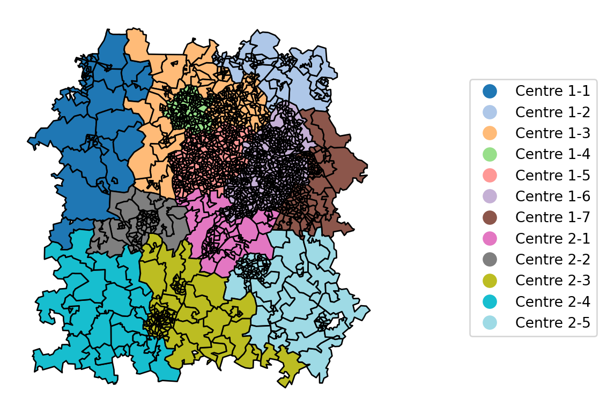
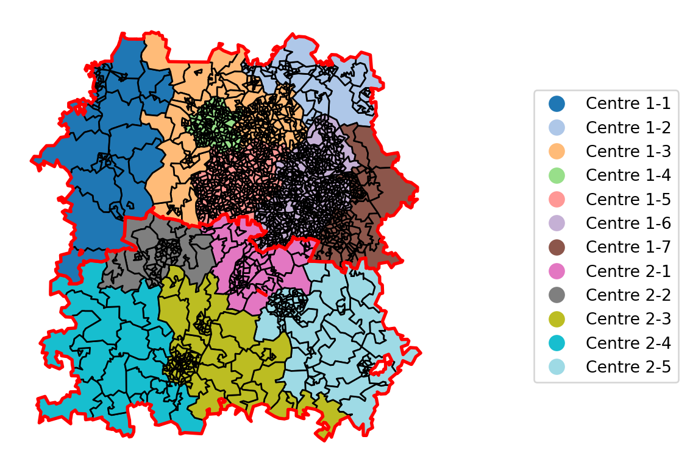
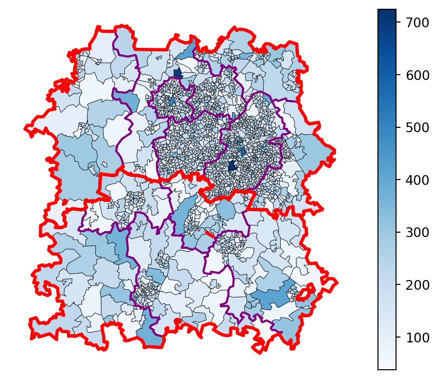

import geopandas
lsoa_geojson_path = 'https://github.com/hsma-programme/h6_3c_interactive_plots_travel/raw/main/h6_3c_interactive_plots_travel/example_code/LSOA_2011_Boundaries_Super_Generalised_Clipped_BSC_EW_V4.geojson'
lsoa_boundaries = geopandas.read_file(lsoa_geojson_path)31 Loading and Visualising the Historical Boundaries
Let’s imagine we’ve been told that the historical boundaries have been based on groups of LSOAs. We’ve been given a list of the LSOAs that belong to each dispatcher, but we only have a standard file of all LSOAs in our region. How can we turn our lists of LSOAs and this file into something to help us visualise the boundaries, and later start to alter the boundaries to try out different solutions?
Note
There are other ways in which you may get the boundaries.
- You may be able to find a shapefile, geojson or geopackage file defining the boundaries.
- You may draw the boundaries in another tool, like
31.1 Our region
We’re going to work with our Birmingham region again. We first worked with this in the section of the book covering travel times; we may return to this travel time data in a later chapter of this part.
To start with, let’s just visualise our wider region.
Let’s now filter this down to just our region.
xmin, xmax = 370000, 420000
ymin, ymax = 250000, 310000
bham_region = lsoa_boundaries.cx[xmin:xmax, ymin:ymax]
bham_region.plot(
figsize=(10,7),
edgecolor='black',
color="cyan"
)
Tip
There are other ways you could conduct this initial filtering - for example, using a list of LSOAs you need to cover, or a filter
Straight away we can see that there are a very large number of LSOAs in our problem, with a lot of variation in the area of each LSOA.
We’ll start with the split of our LSOAs by their overarching dispatch center.
We’ve been told that our dispatch centres are split based on the wider region name. Here, we’d visualised these names.
import matplotlib.pyplot as plt
bham_region.head()
bham_region["region"] = bham_region["LSOA11NM"].str[:-5]
fig, ax = plt.subplots(figsize=(10,7))
ax = bham_region.plot(
ax=ax,
edgecolor='black',
column="region",
legend=True,
cmap="tab20",
legend_kwds={'loc':'center left', 'bbox_to_anchor':(1.2, 0.5)}
)
# Add a dark background to our plotted region
ax.set_facecolor('black')
fig.patch.set_facecolor('black')
# Add a label per region for easier crossreferencing
# particularly where colours aren't very distinct
one_row_per_region = bham_region.groupby('region').head(1)
for x, y, label in zip(one_row_per_region.geometry.centroid.x, one_row_per_region.geometry.centroid.y, one_row_per_region.region):
ax.annotate(label, xy=(x, y), xytext=(0, 0), textcoords="offset points", color="white",
fontweight="bold")
ax.axis('off')/home/sammi/.local/lib/python3.10/site-packages/geopandas/geodataframe.py:1528: SettingWithCopyWarning:
A value is trying to be set on a copy of a slice from a DataFrame.
Try using .loc[row_indexer,col_indexer] = value instead
See the caveats in the documentation: https://pandas.pydata.org/pandas-docs/stable/user_guide/indexing.html#returning-a-view-versus-a-copy

We’ve been told that the regions are as follows:
Centre 1
- Dispatcher 1: Telford and Wrekin; Shropshire
- Dispatcher 2: Cannock Chase; Lichfield; Tamworth
- Dispatcher 3: South Staffordshire; Walsall
- Dispatcher 4: Wolverhampton
- Dispatcher 5: Dudley; Sandwell
- Dispatcher 6: Birmingham
- Dispatcher 7: Solihull; North Warwickshire
Centre 2
- Dispatcher 1: Bromsgrove
- Dispatcher 2: Wyre Forest
- Dispatcher 3: Wychavon; Worcester
- Dispatcher 4: Malvern Hills; Herefordshire
- Dispatcher 5: Redditch; Stratford-on-Avon; Warwick
This information has been given to us in a dataframe; let’s import and inspect this, then join it to our other data.
import pandas as pd
boundary_allocations_df = pd.read_csv("boundary_allocations.csv")
boundary_allocations_df.head()| Region | Centre | Dispatcher | |
|---|---|---|---|
| 0 | Telford and Wrekin | Centre 1 | 1 |
| 1 | Shropshire | Centre 1 | 1 |
| 2 | Cannock Chase | Centre 1 | 2 |
| 3 | Lichfield | Centre 1 | 2 |
| 4 | Tamworth | Centre 1 | 2 |
If we join this to our boundary data, with the geodataframe on the left of the merge, we can then access the data about the dispatchers and centers as variables we can plot.
First, let’s do the join and view the resulting dataframer which will have the additional columns. As the original dataframe only contains separate columns for center and dispatcher, we will first create an additional column that joins the two together.
bham_region = pd.merge(
bham_region,
boundary_allocations_df,
left_on="region",
right_on="Region",
how="left"
)
bham_region["centre_dispatcher"] = bham_region["Centre"].astype("str") + '-' + bham_region["Dispatcher"].astype("str")
bham_region.head()| FID | LSOA11CD | LSOA11NM | LSOA11NMW | BNG_E | BNG_N | LONG | LAT | GlobalID | geometry | region | Region | Centre | Dispatcher | centre_dispatcher | |
|---|---|---|---|---|---|---|---|---|---|---|---|---|---|---|---|
| 0 | 8649 | E01008881 | Birmingham 067A | Birmingham 067A | 412690 | 285438 | -1.81463 | 52.46675 | f79cd8fb-0cf2-4c84-b07c-55bffcf379bb | POLYGON ((413040.413 285809.794, 413145.440 28... | Birmingham | Birmingham | Centre 1 | 6 | Centre 1-6 |
| 1 | 8650 | E01008882 | Birmingham 066A | Birmingham 066A | 411772 | 285390 | -1.82814 | 52.46634 | e7835311-f105-4c92-acae-ecd5255ce534 | POLYGON ((412233.657 285480.231, 412255.373 28... | Birmingham | Birmingham | Centre 1 | 6 | Centre 1-6 |
| 2 | 8651 | E01008883 | Birmingham 078A | Birmingham 078A | 412121 | 285001 | -1.82302 | 52.46283 | 29dbcbc2-4a29-4bb1-addb-42b37d91c647 | POLYGON ((412775.838 285204.808, 412575.845 28... | Birmingham | Birmingham | Centre 1 | 6 | Centre 1-6 |
| 3 | 8652 | E01008884 | Birmingham 078B | Birmingham 078B | 411241 | 284712 | -1.83598 | 52.46025 | df5a2350-a102-4ecc-b028-5a0bbeded198 | POLYGON ((411803.096 284902.674, 411563.054 28... | Birmingham | Birmingham | Centre 1 | 6 | Centre 1-6 |
| 4 | 8653 | E01008885 | Birmingham 076A | Birmingham 076A | 413207 | 284818 | -1.80704 | 52.46116 | 13a855fc-fa09-42a5-a05e-947fcd141ce4 | POLYGON ((413417.353 284803.764, 413034.282 28... | Birmingham | Birmingham | Centre 1 | 6 | Centre 1-6 |
Let’s first just visualise the split across our dispatching centres by plotting the center column.
ax = bham_region.plot(
edgecolor='black',
column="Centre",
legend=True,
legend_kwds={'loc':'center left', 'bbox_to_anchor':(1.2, 0.5)}
)
ax.axis('off')
Then we’ll visualise the split per dispatcher, using our new column to avoid issues with dispatcher numbers being duplicated across centres.
ax = bham_region.plot(
edgecolor='black',
column="centre_dispatcher",
legend=True,
cmap="tab20",
legend_kwds={'loc':'center left', 'bbox_to_anchor':(1.2, 0.5)}
)
ax.axis('off')
Finally, let’s demonstrate how we could overlay the plot by dispatcher with something that highlights the per-centre boundary as well.
To do this, we will have to merge all of the polygons into a single large polygon. This will give us a brand new dataframe with just two rows referencing the two large polygons; we will view this at the end.
GenAI Alert - This code was modified from a suggested approach provided by ChatGPT
# Group by the specified column
grouped_centre_gdf = bham_region.groupby('Centre')
# Create a new GeoDataFrame for the boundaries of each group
boundary_list = []
for group_name, group in grouped_centre_gdf:
# Combine the polygons in each group into one geometry
combined_geometry = group.unary_union
# Get the boundary of the combined geometry
boundary = combined_geometry.boundary
# Add the boundary geometry and the group name to the list
boundary_list.append({'group': group_name, 'boundary': boundary})
# Create a GeoDataFrame from the list of boundaries
grouped_centre_gdf_boundary = geopandas.GeoDataFrame(boundary_list, geometry='boundary', crs=bham_region.crs)
grouped_centre_gdf_boundary.head()| group | boundary | |
|---|---|---|
| 0 | Centre 1 | MULTILINESTRING ((366838.095 273147.999, 36728... |
| 1 | Centre 2 | MULTILINESTRING ((376328.508 242672.351, 37647... |
Finally, we’ll repeat our per-dispatcher
ax = bham_region.plot(
edgecolor='black',
column="centre_dispatcher",
legend=True,
cmap="tab20",
legend_kwds={'loc':'center left', 'bbox_to_anchor':(1.2, 0.5)}
)
grouped_centre_gdf_boundary.plot(
edgecolor='red',
ax=ax,
linewidth=2
)
ax.axis('off')
31.2 Bringing in historical demand data
Finally, let’s bring in some historical demand data to see if we can spot any obvious issues.
First, so we can overlay both the centre boundaries and the per-dispatcher boundaries, we’ll repeat our earlier process to create a geodataframe with a single row and a single polygon per dispatcher.
# Group by the specified column
grouped_dispatcher_gdf = bham_region.groupby("centre_dispatcher")
# Create a new GeoDataFrame for the boundaries of each group
boundary_list = []
for group_name, group in grouped_dispatcher_gdf:
# Combine the polygons in each group into one geometry
combined_geometry = group.unary_union
# Get the boundary of the combined geometry
boundary = combined_geometry.boundary
# Add the boundary geometry and the group name to the list
boundary_list.append({'group': group_name, 'boundary': boundary})
# Create a GeoDataFrame from the list of boundaries
grouped_dispatcher_gdf_boundary = geopandas.GeoDataFrame(boundary_list, geometry='boundary', crs=bham_region.crs)
grouped_dispatcher_gdf_boundary.head()| group | boundary | |
|---|---|---|
| 0 | Centre 1-1 | MULTILINESTRING ((368935.969 274516.594, 36824... |
| 1 | Centre 1-2 | LINESTRING (412258.535 300984.197, 411756.668 ... |
| 2 | Centre 1-3 | LINESTRING (381775.908 282326.500, 380577.001 ... |
| 3 | Centre 1-4 | LINESTRING (388885.341 295185.385, 388630.406 ... |
| 4 | Centre 1-5 | LINESTRING (388258.095 285110.427, 388666.258 ... |
demand = pd.read_csv("demand_pop_bham.csv")
bham_region = bham_region.merge(demand, on="LSOA11CD")
ax = bham_region.plot(
edgecolor='black',
column="demand",
cmap="Blues",
legend=True,
linewidth=0.3
)
grouped_dispatcher_gdf_boundary.plot(
edgecolor='purple',
ax=ax,
linewidth=1.5
)
grouped_centre_gdf_boundary.plot(
edgecolor='red',
ax=ax,
linewidth=2.5
)
ax.axis('off')
31.3 Looking at the current balance of incidents across the region
The demand dataset provided gives us the total number of incidents our dispatchers have dealt with per region per year. Let’s do a bit of merging and exploratory data analysis to see how this varied historically, and so we can start to think about what would be a target level of demand for each region.
First let’s look at the per-centre rates.
grouped_by_centre = bham_region.groupby('Centre')[['demand']].sum()
grouped_by_centre['difference_from_average'] = (grouped_by_centre['demand'] - grouped_by_centre['demand'].mean()).astype('int')
grouped_by_centre| demand | difference_from_average | |
|---|---|---|
| Centre | ||
| Centre 1 | 277146 | 110663 |
| Centre 2 | 55820 | -110663 |
And now by dispatcher
grouped_by_dispatcher = bham_region.groupby('centre_dispatcher')[['demand']].sum()
mean_demand = grouped_by_dispatcher['demand'].mean()
print(f"The demand, averaged across {len(bham_region['centre_dispatcher'].unique())} regions, is {mean_demand:.0f} incidents per year")The demand, averaged across 12 regions, is 27747 incidents per yeargrouped_by_dispatcher['difference_from_mean'] = (grouped_by_dispatcher['demand'] - mean_demand).astype('int')
grouped_by_dispatcher| demand | difference_from_mean | |
|---|---|---|
| centre_dispatcher | ||
| Centre 1-1 | 7600 | -20147 |
| Centre 1-2 | 12825 | -14922 |
| Centre 1-3 | 36084 | 8336 |
| Centre 1-4 | 26690 | -1057 |
| Centre 1-5 | 63379 | 35631 |
| Centre 1-6 | 109387 | 81639 |
| Centre 1-7 | 21181 | -6566 |
| Centre 2-1 | 9630 | -18117 |
| Centre 2-2 | 9429 | -18318 |
| Centre 2-3 | 16699 | -11048 |
| Centre 2-4 | 4217 | -23530 |
| Centre 2-5 | 15845 | -11902 |
print(f"The average difference from the mean across all regions is {abs(grouped_by_dispatcher['difference_from_mean']).mean():.1f}")The average difference from the mean across all regions is 20934.4import plotly.express as px
px.bar(grouped_by_dispatcher.reset_index(), x="centre_dispatcher", y="difference_from_mean")No wonder our dispatchers are struggling - there are huge discrepancies in the demand they have been responsible for.
So what are we going to do about it?
Unlike in our travel time location work in the location allocation chapter, where we initially focussed on minimize the average travel time or population-weighted travel time, here we instead want to minimize the difference between the demand for each region going forward - so let’s move onto the next chapter and explore how we will do that.